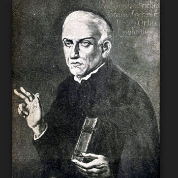

Isusovački blaženici
Svećenik · Mučenik
Bl. Joseph Imbert
oko 1720.–1794.
Joseph Imbert nastavio je potajno služiti nakon odbijanja revolucionarne prisege. Umro je među zatočenim svećenicima na pretrpanom brodu kod Rocheforta u Francuskoj.
Tekst je preveden i prilagođen uz pomoć umjetne inteligencije.

Izvor slike
- Spomendan
- 9. lipnja
- Zaštitništvo
- Nije navedeno u izvoru
- Životni vijek
- oko 1720.–1794.
- Djelovanje
- Obrazovanje i poučavanje vjere · Progoni i progonstvo · Mučeništvo
- Razdoblje
- 18. stoljeće
- Datum smrti
- 9. lipnja 1794.
U kalendaru zbirke koristi se dan smrti. Taj datum nije zasebna potvrda liturgijskoga spomendana.
Životopis
Josip Imbert rođen je oko 1720. u Marseilleu. U isusovački novicijat ušao je u Avignonu, a nakon svećeničkoga ređenja poučavao u trima kolegijima. Ukidanje Družbe 1762. zateklo ga je u Grenobleu. Nastavio je služenje u biskupiji Moulins. Odbio je prihvatiti Građanski ustav klera 1790. te morao napustiti župu, ali je ostao potajno dijeliti sakramente.
Nakon protjerivanja biskupa postao je apostolski vikar i time posebno izložen progonu. Uhićen je 1793. i s drugim svećenicima poslan prema Rochefortu. Dana 13. travnja 1794. ukrcan je na Deux-Associés, brod preuređen za deportirane svećenike. Zatočenicima su oduzeti brevijari, krunice i druge nabožne stvari. Ograničen prostor, loša hrana i nehigijenski uvjeti pogodovali su teškim bolestima.
Leclercqova zbirka donosi dodatno osobno svjedočanstvo. Kada je zatočenik Roulhac bio osuđen na smrt bez mogućnosti ispovijedi, Imbert je bio među svećenicima koji su mu potajno podijelili odrješenje dok je vođen na pogubljenje. Autor svjedočanstva navodi da mu je Imbert sam ispričao taj događaj. Već narušena zdravlja, Imbert se razbolio i umro 9. lipnja 1794. Pokopan je na obližnjem otoku s drugim žrtvama zatočeništva. Među rochefortskim svećenicima mučenicima proglašen je blaženim 1995. za pontifikata Ivana Pavla II.
Tekst je preveden i prilagođen uz pomoć umjetne inteligencije.
Pročitaj više na izvornoj stranici ↗